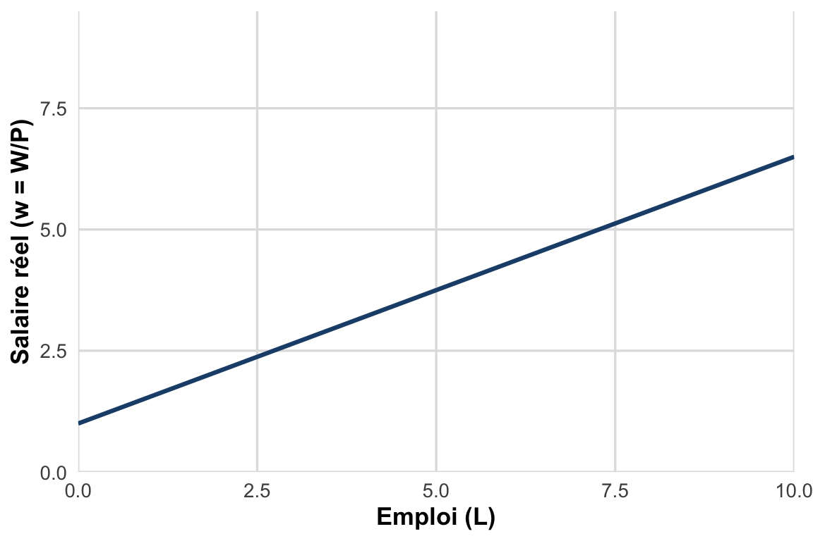
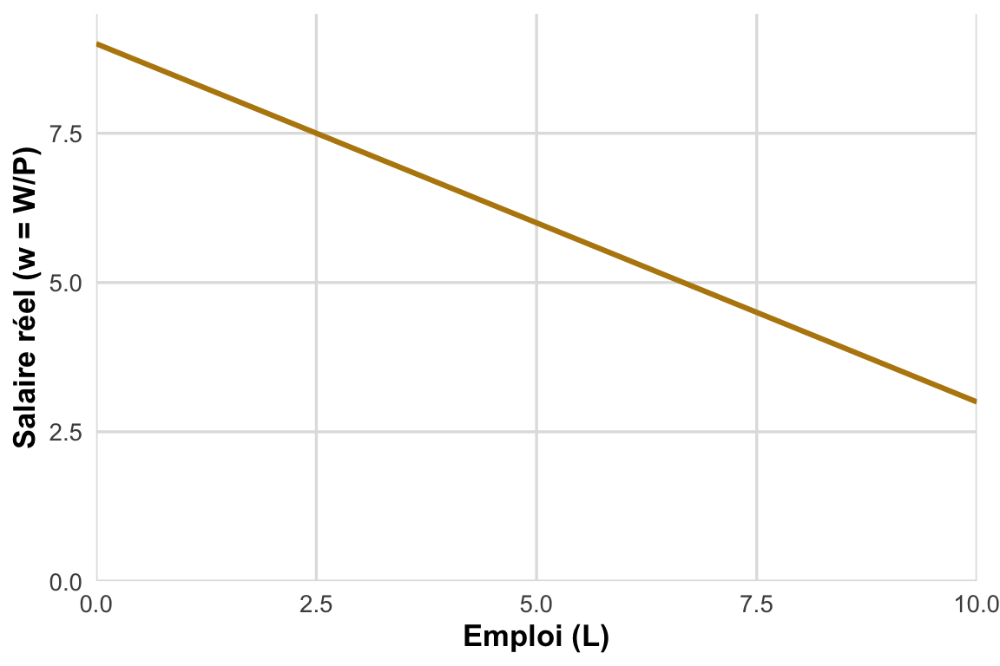
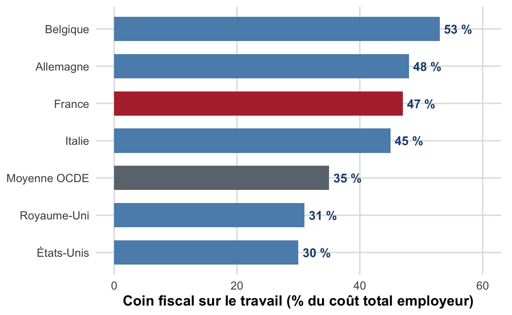

CM 5 : L’analyse néoclassique du marché du travail
Un marché comme les autres : l’équilibre par les salaires exclut tout chômage involontaire
Pierre Beaucoral
L2 AES : Semestre 1
Plan de la séance
Les hypothèses du modèle néoclassique (CPP, rationalité, arbitrage)
L’offre de travail : effet de substitution vs effet de revenu
La demande de travail : la productivité marginale décroissante
L’équilibre et le chômage volontaire
Chocs et ajustement par les salaires
La solution néoclassique : baisser le coût du travail
Limites de l’approche
D’après M. Ouedraogo (CERDI, Université Clermont Auvergne), Chapitre II (Partie 2), Section I : L’analyse néoclassique du marché du travail.
Objectifs de la séance
À l’issue de cette séance, vous saurez :
Énoncer les hypothèses du modèle néoclassique du marché du travail (CPP, rationalité, arbitrage).
Expliquer pourquoi l’offre de travail est supposée croissante et la demande décroissante avec le salaire réel.
Représenter et commenter le graphique d’équilibre offre-demande de travail.
Justifier pourquoi les néoclassiques qualifient le chômage résiduel de « volontaire ».
Analyser l’effet d’un choc (immigration, indemnités chômage, productivité) sur le salaire et l’emploi d’équilibre.
Expliquer pourquoi un salaire minimum trop élevé crée du chômage dans ce cadre, et pourquoi la solution néoclassique consiste à baisser le coût du travail.
Rappel : quatre cadres théoriques expliquent le chômage
Le chapitre II (Partie 2) présente quatre grands cadres théoriques, dans l’ordre chronologique de leur développement :
Néoclassique (aujourd’hui) : marché du travail en concurrence pure et parfaite.
WS-PS : négociation salariale et fixation des prix.
Appariement : flux, frictions, courbe de Beveridge.
Chaque cadre propose une explication différente des causes du chômage, et donc des politiques économiques différentes pour le réduire.
Quatre cadres théoriques se sont développés dans le temps
flowchart LR
A[1. Neoclassique - CPP] --> B[2. Keynesien - demande effective]
B --> C[3. WS-PS - negociation salariale]
C --> D[4. Appariement - frictions et flux]
classDef courant fill:#1f4e79,stroke:#1f4e79,color:#ffffff
class A courant
Les quatre cadres théoriques se succèdent chronologiquement : chacun répond aux limites du précédent. Le cadre néoclassique, étudié dans ce cours, ouvre la séquence.
Ce cours (CM 5) porte sur le premier cadre, historiquement le plus ancien : le modèle néoclassique du marché du travail.
Le marché néoclassique respecte les conditions de la CPP
L’analyse néoclassique traite l’offre et la demande de travail comme celles de n’importe quelle marchandise, sous les hypothèses de la concurrence pure et parfaite (CPP) : atomicité des offreurs/demandeurs, homogénéité du travail, libre entrée-sortie, information parfaite.
Deux hypothèses clés structurent le raisonnement :
Les agents sont rationnels : les ménages maximisent leur utilité, les entreprises leur profit.
Le travail fait l’objet d’un arbitrage : entre loisir et travail pour les ménages, entre capital et travail pour les entreprises.
Les ménages arbitrent entre consommation et loisir
Chaque individu dispose d’une dotation de temps qu’il répartit entre travail (source de revenu, donc de consommation) et loisir.
Salaire de réserve \(w_r\). Rémunération minimale qu’un individu est prêt à accepter pour occuper un emploi. En-deçà de ce seuil, il préfère rester inactif.
Déterminants : revenus du ménage et transferts publics, qualification (éducation, expérience), coûts fixes liés au travail (garde d’enfants, transport), fiscalité sur les revenus du travail.
Un individu offre son travail dès lors que le salaire de marché \(w\) dépasse son salaire de réserve \(w_r\).
Une hausse du salaire produit deux effets opposés
Effet de substitution
Le loisir devient plus « cher » en coût d’opportunité \(\Rightarrow\) l’individu substitue du travail au loisir : il offre davantage de travail.
Effet de revenu
À salaire plus élevé, un même niveau de vie est atteint avec moins d’heures travaillées\(\Rightarrow\) l’individu peut choisir de consommer plus de loisir.
Par simplification, le modèle néoclassique retient l’hypothèse selon laquelle l’effet de substitution domine l’effet de revenu.
L’offre agrégée de travail croît avec le salaire réel
L’offre agrégée \(L^s\) est la somme des offres individuelles : elle indique la quantité de travail offerte dans l’économie pour chaque niveau de salaire réel \(w = W/P\).

Figure 1: L’offre agrégée de travail est une fonction croissante du salaire réel : l’effet de substitution domine l’effet de revenu.
La productivité marginale décroissante gouverne la demande
À court terme, le capital est fixe : les entreprises embauchent jusqu’à égaliser le salaire réel à la productivité marginale du travail (PmL), elle-même décroissante (chaque travailleur supplémentaire ajoute moins de production que le précédent).
Plus le coût du travail \(w\) est élevé, plus les coûts de production augmentent \(\Rightarrow\)la demande de travail \(L^d\) est une fonction décroissante du salaire réel.
À long terme, les entreprises peuvent aussi substituer capital et travail, mais la relation décroissante entre \(L^d\) et \(w\) demeure. La demande agrégée \(L^d\) est la somme des demandes individuelles des entreprises.
La demande de travail décroît avec le salaire réel

Figure 2: La demande agrégée de travail est une fonction décroissante du salaire réel : un coût du travail plus élevé réduit les embauches.
Les heures travaillées ont chuté à mesure que les salaires montaient
Figure 3: Durée annuelle moyenne du travail en France, 1950-2019 (heures par travailleur), avec repères internationaux 2019. Sur longue période, le pouvoir d’achat du salaire a été multiplié par environ 5 tandis que la durée annuelle du travail était réduite d’environ un tiers : à l’inverse de l’hypothèse du modèle néoclassique (effet de substitution dominant), c’est l’effet de revenu qui l’a emporté sur la marge des heures travaillées. Source : OCDE, Average annual hours actually worked (1970-2019) ; Bergeaud, Cette et Lecat (2016, Banque de France), Productivity Trends in Advanced Countries, pour les points antérieurs à 1970.
Note : ce fait empirique nuance l’hypothèse simplificatrice du modèle (§7, Limites) sans l’invalider sur le court terme.
L’équilibre égalise offre et demande de travail
L’intersection des deux courbes détermine le salaire d’équilibre\(w^*\) et l’emploi d’équilibre\(L^*\).
Figure 4: Équilibre néoclassique sur le marché du travail : la rencontre de l’offre et de la demande de travail détermine le salaire réel et l’emploi d’équilibre.
À l’équilibre, tout chômage résiduel est volontaire
Pour les néoclassiques, il n’existe pas de chômage involontaire à l’équilibre : tout individu disposé à travailler au taux de salaire de marché trouve un emploi.
Le chômage résiduel observé est qualifié de chômage volontaire : il s’agit d’individus dont le salaire de réserve \(w_r\) est supérieur au salaire de marché \(w^*\) en vigueur, et qui choisissent donc de ne pas travailler à ce prix.
Une chaîne logique relie hypothèses, courbes et équilibre
flowchart TD
H[Hypotheses CPP - agents rationnels] --> O[Offre croissante - substitution domine]
H --> Dm[Demande decroissante - PmL decroissante]
O --> E[Equilibre - offre egale demande]
Dm --> E
E --> V[Chomage residuel qualifie de volontaire]
Les hypothèses de concurrence pure et parfaite déterminent la forme des deux courbes ; leur rencontre fixe l’équilibre, et tout chômage résiduel est alors qualifié de volontaire.
Les salaires flexibles absorbent tous les chocs
Dans ce cadre, les salaires sont parfaitement flexibles et constituent la variable d’ajustement du marché : tout choc déplace l’une des deux courbes, puis le salaire s’ajuste pour ramener le marché au plein emploi.
Choc
Courbe affectée
Effet attendu
Immigration massive
Offre \(\uparrow\)
\(w \downarrow\), \(L \uparrow\)
Hausse des indemnités chômage
Offre \(\downarrow\) (\(w_r \uparrow\))
\(w \uparrow\), \(L \downarrow\)
Baisse de l’impôt sur le revenu
Offre \(\uparrow\)
\(w \downarrow\), \(L \uparrow\)
Hausse de la productivité du travail
Demande \(\uparrow\)
\(w \uparrow\), \(L \uparrow\)
Automatisation (tâches peu qualifiées)
Demande \(\downarrow\)
\(w \downarrow\), \(L \downarrow\)
Exemple : une immigration massive déplace l’offre
L’arrivée de nouveaux actifs déplace la courbe d’offre \(L^s\)vers la droite (à chaque salaire, davantage de travailleurs sont disponibles).
Au salaire initial \(w^*\), l’offre excède désormais la demande.
Le salaire réel s’ajuste à la baisse jusqu’à un nouvel équilibre.
L’emploi d’équilibre augmente.
Logique générale
Un choc d’offre (ou de demande) provoque un déséquilibre temporaire ; le salaire, variable flexible, le résorbe en ramenant le marché au plein emploi, à un nouveau couple \((w^*, L^*)\).
Le salaire réel est la variable d’ajustement de tout choc
flowchart LR
A[Choc offre ou demande] --> B[Desequilibre temporaire]
B --> C[Ajustement du salaire reel]
C --> D[Nouvel equilibre de plein emploi]
Qu’il touche l’offre ou la demande de travail, un choc crée un déséquilibre temporaire que le salaire réel, variable flexible, résorbe en ramenant le marché à un nouvel équilibre de plein emploi.
Ce mécanisme générique s’applique à chacun des chocs du tableau précédent : immigration, indemnités chômage, productivité, automatisation.
La recommandation néoclassique : laisser agir le marché
Le modèle néoclassique recommande de laisser agir les forces du marché :
Limiter les interventions publiques directes sur le salaire.
Rendre les salaires flexibles (éviter un salaire minimum trop élevé, des conventions collectives trop rigides).
Assouplir le droit du travail pour faciliter la mobilité.
Réduire les prélèvements et prestations qui désincitent au travail.
Objectif : ramener le marché du travail au plus près de son fonctionnement concurrentiel, seul garant du plein emploi.
Le coin fiscal renchérit le coût du travail sans hausser le salaire net
Coin fiscal (« tax wedge »). Écart entre le coût du travail payé par l’employeur (salaire brut + cotisations patronales) et le salaire net réellement perçu par le salarié (après cotisations salariales et impôts).
Un coin fiscal élevé déplace la courbe de demande de travail \(L^d\)vers la gauche (le coût pour l’entreprise augmente à salaire net inchangé) : à rigidité salariale donnée, l’emploi d’équilibre baisse. D’où la préconisation néoclassique de baisser les cotisations et prélèvements pesant sur le travail.
Le coin fiscal sur le travail : la France parmi les plus élevés de l’OCDE

Figure 5: Coin fiscal sur le travail (impôt sur le revenu et cotisations sociales salarié + employeur, en % du coût total du travail), célibataire au salaire moyen sans enfant, 2023. La France se situe nettement au-dessus de la moyenne OCDE, ce qui matérialise le déplacement de L^d vers la gauche évoqué ci-dessus. Source : OCDE, Taxing Wages 2024.
Un salaire minimum trop élevé crée du chômage classique
Si un salaire plancher \(w_{min}\) est imposé au-dessus du salaire d’équilibre \(w^*\), l’offre de travail excède la demande à ce niveau de salaire : c’est du chômage classique (lecture néoclassique : chômage volontaire au sens où il résulte d’un prix administré trop élevé).
Figure 6: Un salaire minimum fixé au-dessus du salaire d’équilibre crée un excédent d’offre de travail : du chômage apparaît, faute d’ajustement du salaire à la baisse.
Le SMIC français est élevé rapporté au salaire médian
Figure 7: Indice de Kaitz (salaire minimum / salaire médian des salariés à temps plein), ~2022. La France affiche l’un des ratios les plus élevés de l’OCDE : le SMIC est proche des deux tiers du salaire médian, ce qui rend plausible l’hypothèse d’un salaire minimum fixé au-dessus du salaire d’équilibre néoclassique (w_min > w*, cf. graphique précédent). Source : OCDE, base « Minimum relative to median wages of full-time workers ».
Baisser le coût du travail : la solution néoclassique au chômage
Puisque le chômage classique résulte d’un salaire trop élevé par rapport à l’équilibre concurrentiel, la solution logique consiste à baisser le coût du travail :
Réduire les cotisations patronales et le coin fiscal.
Limiter les hausses du SMIC au-delà de l’inflation et de la productivité.
Assouplir les conventions collectives et les rigidités salariales à la baisse.
Cf. Chapitre III pour l’analyse détaillée des politiques françaises de baisse du coût du travail (allègements de cotisations, CICE).
Quatre limites fragilisent l’approche néoclassique
Hypothèses irréalistes : salaires souvent administrés (SMIC, conventions collectives) et non fixés par un marché atomistique ; travail hétérogène (marchés segmentés) ; information coûteuse ; barrières à l’entrée/sortie (qualifications, coûts de licenciement).
Ajustement non instantané : rigidités salariales et lenteur des contrats retardent le retour à l’équilibre.
Interdépendance offre-demande : le modèle suppose offre et demande indépendantes, alors que les décisions d’embauche influencent en retour la motivation et la disponibilité des travailleurs.
Vision en équilibre partiel : le marché du travail est isolé du reste de l’économie, critique centrale que formulera l’analyse keynésienne (CM 6).
À retenir
Le modèle néoclassique applique les hypothèses de la CPP au marché du travail : agents rationnels, arbitrage loisir/travail et capital/travail.
L’offre de travail \(L^s\) est croissante en \(w\) (effet de substitution > effet de revenu) ; la demande \(L^d\) est décroissante en \(w\) (PmL décroissante).
L’équilibre \((w^*, L^*)\) élimine tout chômage involontaire : le chômage résiduel est volontaire.
Les salaires flexibles absorbent les chocs ; un salaire minimum au-dessus de \(w^*\) crée du chômage classique.
La solution néoclassique : baisser le coût du travail (coin fiscal, modération du SMIC) et laisser flexibiliser les salaires.